library(papercheck)
library(dplyr)
library(ggplot2)
theme_set(theme_minimal(base_size = 16))
set.seed(8675309) You can build a simple general linear model to predict the classification of text strings.
Set up ground truth
See the metascience vignette for an explanation of how to set up a ground truth table. Here, we’re going to split our data into a training and test set.
ground_truth <- readr::read_csv("power/power_screening_coded.csv",
show_col_types = FALSE)
train <- slice_sample(ground_truth, prop = 0.5)
test <- anti_join(ground_truth, train, by = "text")Get important words
You can use any method for finding the words you want to use in your model, but papercheck has a built-in function to find the words that are most distinctive in your classification groups. The classification values here are 0 and 1, but can be TRUE/FALSE or any two text values.
n_X is the total number of incidents of the word in
category X, while freq_X is the average number of incidents
per text string in category X (so can be higher than 1 if a word tends
to be found several times per sentence). The table gives you the top
n words with the largest absolute difference in
frequency.
words <- distinctive_words(
text = train$text,
classification = train$power_computation,
n = 10
)| word | n_1 | n_0 | total | freq_1 | freq_0 | difference |
|---|---|---|---|---|---|---|
| ### | 363 | 232 | 595 | 3.02 | 1.67 | 1.36 |
| size | 96 | 29 | 125 | 0.80 | 0.21 | 0.59 |
| of | 183 | 135 | 318 | 1.52 | 0.97 | 0.55 |
| a | 147 | 105 | 252 | 1.23 | 0.76 | 0.47 |
| the | 157 | 242 | 399 | 1.31 | 1.74 | 0.43 |
| sampl | 68 | 32 | 100 | 0.57 | 0.23 | 0.34 |
| effect | 74 | 42 | 116 | 0.62 | 0.30 | 0.31 |
| an | 52 | 17 | 69 | 0.43 | 0.12 | 0.31 |
| particip | 49 | 26 | 75 | 0.41 | 0.19 | 0.22 |
| α | 26 | 0 | 26 | 0.22 | 0.00 | 0.22 |
By default, the function will “stem” words using the “porter”
algorithm. For example, “sampl” will match “sample”, “samples” and
“sampling”. If your text is not English, check
SnowballC::getStemLanguages() for other supported
languages, or set stem_language = FALSE.
You can get rid of words that you think will be irrelevant (even if
they are predictive of classification in this data set) by adding them
to stop_words. The tidytext::stop_words object
gives you a list of common stop words, but this includes words like
“above”, “according”, or “small”, so use this with caution.
The “###” value represents any number (the default setting for the
numbers argument). We can set the numbers
argument to “specific” to see if there are any specific numbers
associated with power analyses.
words <- distinctive_words(
text = train$text,
classification = train$power_computation,
n = 10,
numbers = "specific",
stop_words = c("the", "a", "of", "an", "and")
)| word | n_0 | n_1 | total | freq_0 | freq_1 | difference |
|---|---|---|---|---|---|---|
| size | 29 | 96 | 125 | 0.21 | 0.80 | 0.59 |
| sampl | 32 | 68 | 100 | 0.23 | 0.57 | 0.34 |
| effect | 42 | 74 | 116 | 0.30 | 0.62 | 0.31 |
| particip | 26 | 49 | 75 | 0.19 | 0.41 | 0.22 |
| α | 0 | 26 | 26 | 0.00 | 0.22 | 0.22 |
| analysi | 24 | 45 | 69 | 0.17 | 0.38 | 0.20 |
| 80 | 6 | 29 | 35 | 0.04 | 0.24 | 0.20 |
| in | 105 | 67 | 172 | 0.76 | 0.56 | 0.20 |
| detect | 27 | 46 | 73 | 0.19 | 0.38 | 0.19 |
| we | 46 | 62 | 108 | 0.33 | 0.52 | 0.19 |
Code text features
Next, code the features of your ground truth text using
text_features(). This will give you a data frame that codes
0 or 1 for the absence or presence of each word or feature.
-
word_countdefaults to TRUE, and returns the number of words in each text string. -
has_numberdefaults to TRUE, and checks for any number in your text. If “###” is in your words list, this will be automatically set to TRUE. -
has_symbolsis a named vector of non-word strings (use regex) that you want to detect. -
valuesdefaults to “presence” and returns 0 or 1 for the presence of a word in each text string, while “count” returns the number of incidences of the word per string.
has_symbols <- c(has_equals = "=",
has_percent = "%")
features <- text_features(
text = train$text,
words = words$word,
word_count = FALSE,
has_number = TRUE,
has_symbol = has_symbols,
values = "presence" # presence or count
)
# show the first row
features[1, ] |> str()
#> 'data.frame': 1 obs. of 13 variables:
#> $ has_number : num 0
#> $ has_equals : num 0
#> $ has_percent: num 0
#> $ size : num 0
#> $ sampl : num 1
#> $ effect : num 0
#> $ particip : num 0
#> $ α : num 0
#> $ analysi : num 0
#> $ 80 : num 0
#> $ in : num 0
#> $ detect : num 0
#> $ we : num 0Train a model
You can then use this feature data to train a model. Here, we’re using a simple binomial logistic regression to predict the classification from all of the features.
# Train logistic regression model
model <- glm(train$power_computation ~ .,
data = features,
family = "binomial")
summary(model)
#>
#> Call:
#> glm(formula = train$power_computation ~ ., family = "binomial",
#> data = features)
#>
#> Coefficients:
#> Estimate Std. Error z value Pr(>|z|)
#> (Intercept) -2.03224 0.38135 -5.329 9.87e-08 ***
#> has_number 0.69528 0.40851 1.702 0.0888 .
#> has_equals 0.39358 0.43149 0.912 0.3617
#> has_percent 0.10123 0.51281 0.197 0.8435
#> size 1.60936 0.49690 3.239 0.0012 **
#> sampl -0.08325 0.44324 -0.188 0.8510
#> effect -0.51222 0.44972 -1.139 0.2547
#> particip 0.37127 0.39893 0.931 0.3520
#> α 18.11996 1144.10286 0.016 0.9874
#> analysi 0.86501 0.38961 2.220 0.0264 *
#> `80` 0.78556 0.58414 1.345 0.1787
#> `in` -0.17688 0.33034 -0.535 0.5923
#> detect 0.67571 0.46059 1.467 0.1424
#> we 0.51235 0.33593 1.525 0.1272
#> ---
#> Signif. codes: 0 '***' 0.001 '**' 0.01 '*' 0.05 '.' 0.1 ' ' 1
#>
#> (Dispersion parameter for binomial family taken to be 1)
#>
#> Null deviance: 357.66 on 258 degrees of freedom
#> Residual deviance: 244.87 on 245 degrees of freedom
#> AIC: 272.87
#>
#> Number of Fisher Scoring iterations: 17You can use any model you like and any method to assess and choose the best model.
Predict classification
Now you can classify any text using this model. First, we’re going to
predict the classification of the original training data. Use
text_features() to get the feature data and
predict() to return the model response, and compare this
result to a threshold (here 0.5) to generate the predicted
classification.
train$model_response <- predict(model, features)
You can see that it’s just below 0 that Yes values become more probable than No values. Remeber, this will change a bite depending on your sample, so you don’t need to optimize the threshold to two decimal places or anything.
[!NOTE] You need to consider the use of your classification when setting a threshold. Do you want to be over-inclusive and have another step to weed out false positives? Or under-inclusive and be absolutely sure that you only classify a sentence as having a power analysis when it defiitely does? Or do you want to balance these two types of error?
train$power_computation_predict <- train$model_response > 0
dplyr::count(train,
power_computation,
power_computation_predict)
#> # A tibble: 4 × 3
#> power_computation power_computation_predict n
#> <dbl> <lgl> <int>
#> 1 0 FALSE 115
#> 2 0 TRUE 24
#> 3 1 FALSE 35
#> 4 1 TRUE 85Now you should test this on a new set of data.
test_features <- text_features(
text = test$text,
words = words,
word_count = FALSE,
has_number = TRUE,
has_symbol = has_symbols,
values = "presence" # presence or count
)
test$model_response <- predict(model, test_features)
test$power_computation_predict <- test$model_response > 0
dplyr::count(test,
power_computation,
power_computation_predict)
#> # A tibble: 4 × 3
#> power_computation power_computation_predict n
#> <dbl> <lgl> <int>
#> 1 0 FALSE 109
#> 2 0 TRUE 43
#> 3 1 FALSE 17
#> 4 1 TRUE 90Create a module
To create a module for this, you will need to save your model and create a module with code.
saveRDS(model, "power/power_log_model.Rds")
#' Power Log Model
power_log_model <- function(paper) {
# initial text search
table <- paper |>
papercheck::search_text("power(ed)?\\b") |>
papercheck::search_text("(\\.[0-9]|[0-9]%)")
# get text features
words <- c("size", "sampl", "effect", "particip", "α", "analysi", "80",
"in", "detect", "we")
has_symbols <- c(has_equals = "=",
has_percent = "%")
features <- text_features(
text = table$text,
words = words,
word_count = FALSE,
has_number = TRUE,
has_symbol = has_symbols,
values = "presence" # presence or count
)
# predict response from model
model <- readRDS("power_log_model.Rds")
table$model_response <- predict(model, features)
table$power_computation_predict <- table$model_response > 0
# summarise by paper
summary_table <- table[table$power_computation_predict, ] |>
dplyr::count(id, name = "n_power")
list(
table = table,
summary = summary_table,
na_replace = 0
)
}Now you can use module_run() to run the module on a new
paper or set of papers.
m <- demodir() |> read_grobid() |>
module_run("power/power_log_model.R")
m$table[, c("id", "model_response", "power_computation_predict", "text")]
#> # A tibble: 2 × 4
#> id model_response power_computation_predict text
#> <chr> <dbl> <lgl> <chr>
#> 1 prereg -0.256 FALSE The efficiency benefit can be…
#> 2 prereg 0.290 TRUE They require a smaller sample…
m$summary
#> id n_power
#> 1 eyecolor 0
#> 2 incest 0
#> 3 prereg 1